| |
2011 год
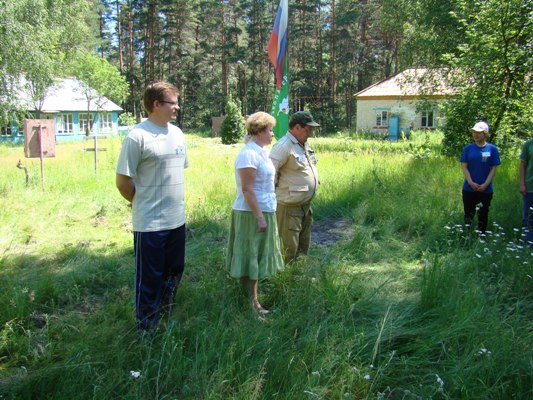
Открытие смены эколагеря 2011г. с.Тихменево
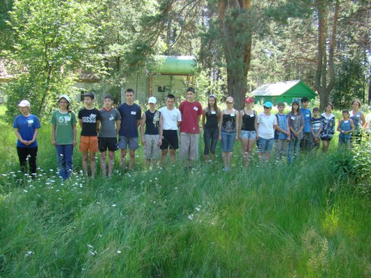
Смена эколагеря 2011г.
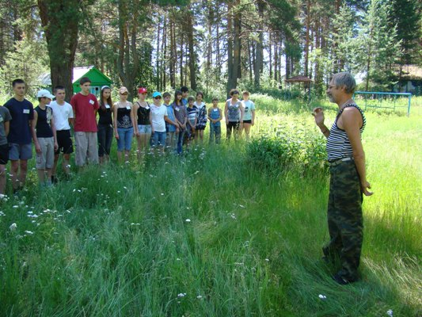
Приветствие Муравьёва И.В. = доцент ПИРО.
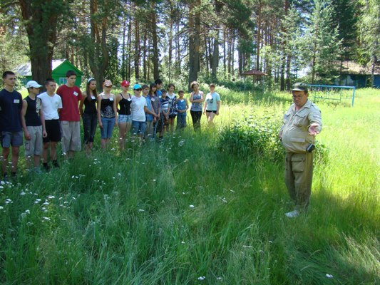
Приветствие Полумордвинов О.А.
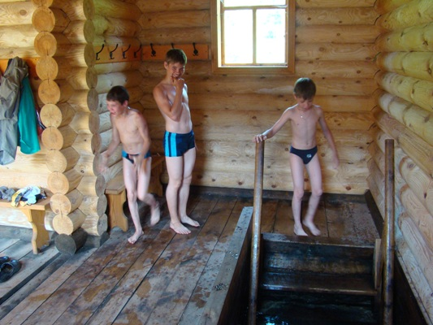
В купальне святой Параскевы
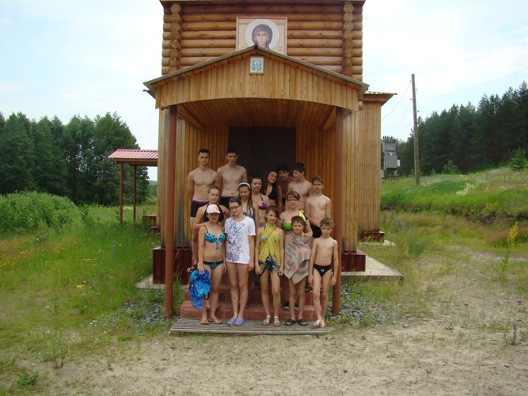
У часовни святой Параскевы
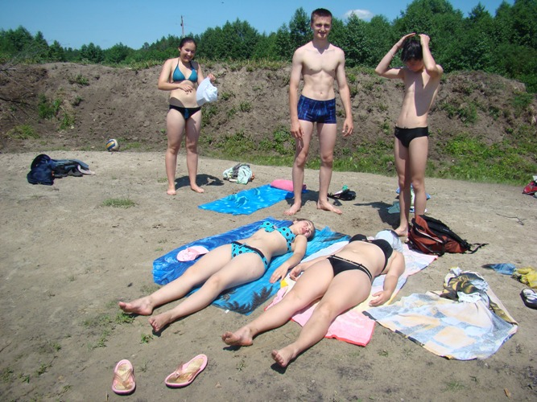
Купаемся и загораем на пруду
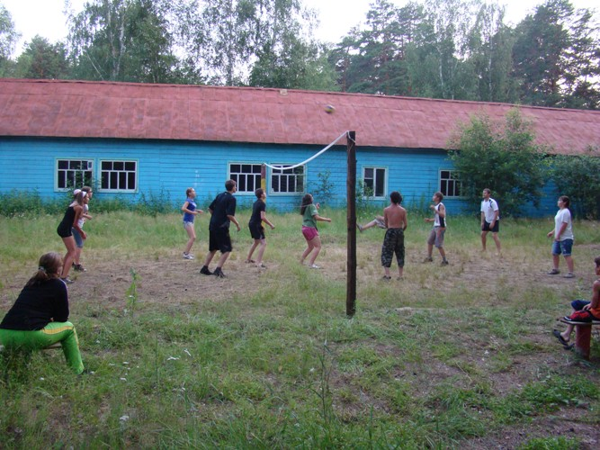
Играем в волейбол с гостями

Алферов Олег у ловушки на жужелиц
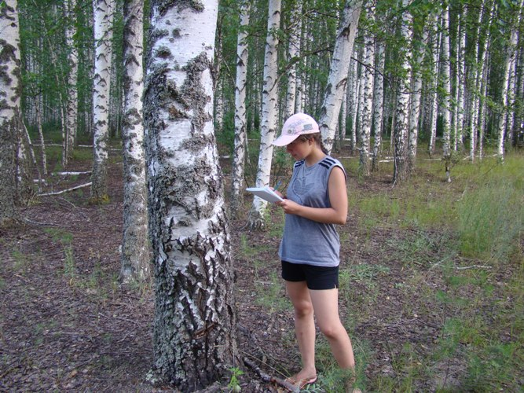
Черкасова Анна на маршруте
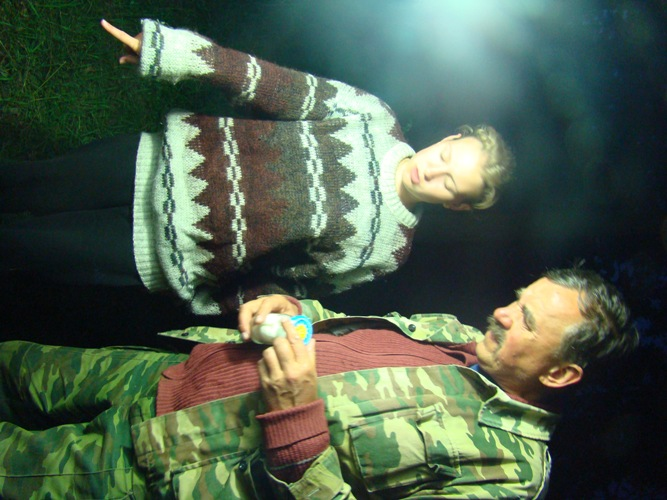
Ночной лов чешуекрылых
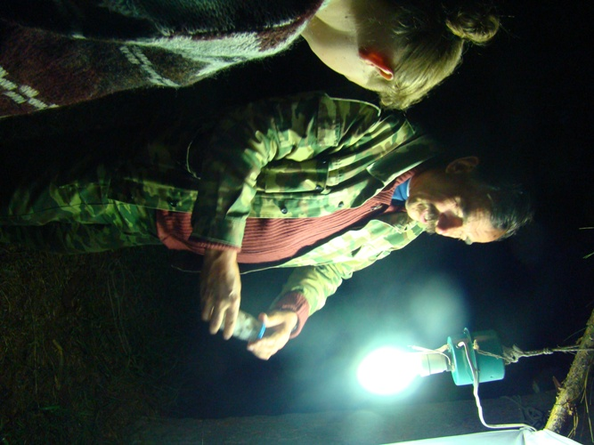
Работают Борминцева М. и Иванов С.В.

"Наша кормилица"
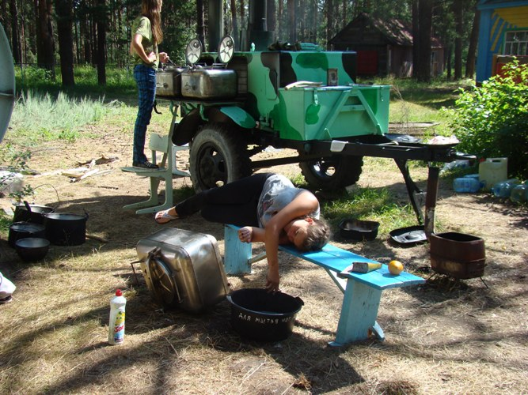
Так лень мыть котлы...
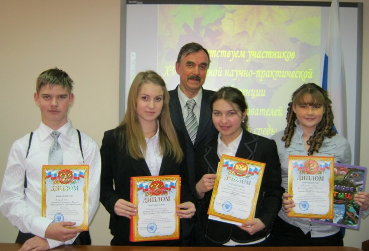
Призеры областной конференции исследователей природы
|
Краткий отчёт о работе экологического лагеря «В гостях у природы – 2011»
Экологический лагерь "В гостях у природы" в сезоне 2011 года проходил в период с 29 июня по 14 июля на территории заброшенного школьного лагеря рядом с селом Тихменево Кузнецкого района. В составе лагеря находились учащиеся 5 - 10 классов МБОУ гимназия № 1 и МБОУ СОШ № 8 города Кузнецка в количестве 25 человек. Также были приглашены бывшие учащиеся гимназии № 1, а ныне студенты - Хлебникова Дарья (ПГСХА), Бубнов Дмитрий (МГУ), Потапова Настя (Институт пищевой промышленности, С-Петербург)- бывшие участники экологического лагеря. Они помогали в проведении организационных занятий в лагере. В качестве почётных гостей были приглашены И.В. Муравьев доцент ПИРО, Н.Н. Никишин, старший лаборант ПГПУ Полумордвинов О.А., аспирант ПГПУ В.Чернышев, которые участвовали в открытии лагерной смены вместе с начальником Управления образования г. Кузнецка Борисовой Л.А. В лагере учащиеся разбились по интересам. Большая часть занималась спортом - футбол, волейбол, физическая подготовка, кросс. Часть занималась сбором практического материала для написания исследовательских проектов. Был собран материал по Высшим ночным разноусым чешуекрылым (лов проводился на свет УФ-лампы), лишайникам в окрестностях села Тихменево и сбор жужелиц на нескольких линиях ловушек Барбера, а также исследовалось действие на комаров разных видов реппелентов. Проводилась работа по определению полевых растений с помощью школьных определителей. Лагерь работал на полном самообслуживании - сами готовили пищу в военно-полевой кухне КП-140, топили баню, мыли посуду, стирали. В свободное время проводились спортивные соревнования, в том числе команды школьников с командой гостей по волейболу, загорали и купались на пруду, ходили за ягодами в лес, три раза посетили часовню святой Параскевы, где окунались в купель с ледяной родниковой водой. Уезжать не хотелось. Ребята со слезами на глазах упрашивали остаться ещё. Располагался лагерь в частично уцелевших корпусах из-за недостатка палаток на 25 человек и запрета базирования в лесу Кузнецким лесхозом по причине повышенной пожарной опасности, хотя половину смены утром и вечером лил дождь. Деньги на питание учащихся были выделены из городского бюджета в полном объеме.
2001 год
2002 год
2003 год
2004 год
2005 год
2006 год
2007 год
2009 год
2010 год
| |


{kind=link}
{kind=link}
{kind=link}
{kind=link}
{kind=link}
{kind=link}
{kind=link}
{kind=link}
{kind=link}
{kind=link}
{kind=link}
{kind=link}
{kind=link}
{kind=link}
{kind=link}
{kind=link}
{kind=link}
{kind=link}
{kind=link}